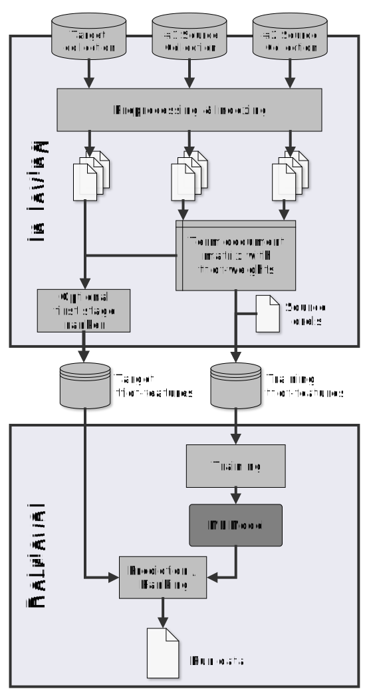
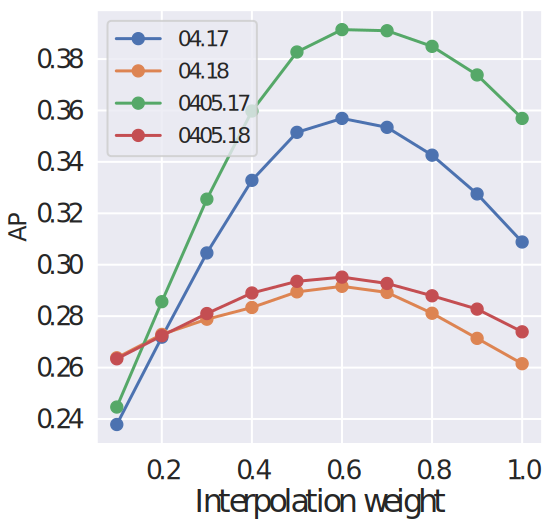
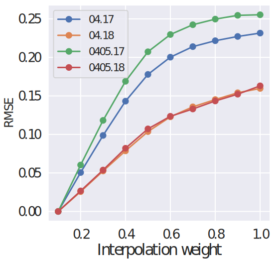
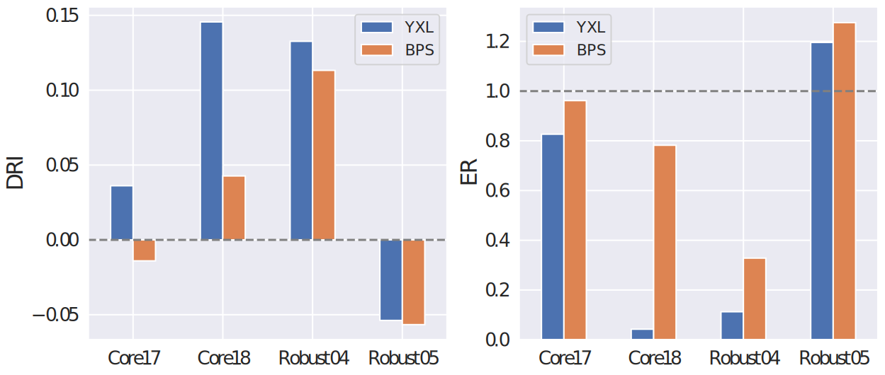

ir_metadata
An Extensible Metadata Schema for IR Experiments
ACM SIGIR | Madrid | July 11-15, 2022
Timo Breuer, Jüri Keller, Philipp Schaer
Contributions
- Metadata schema based on the PRIMAD taxonomy
- Software support by
repro_eval - Open-access dataset
- Meta-evaluations / reproducibility studies
Motivation
- CLEF, NTCIR, TREC archive experimental artifacts, i.e., run files
- Runs are a valuable resource for baselines and meta-evaluations
- BUT the run data does not provide context
- Annotating run files with metadata information facilitatesbetter comparability, transparency, and reproducibility
Metadata annotations
307 Q0 497476 1 0.9931 bm25
307 Q0 469928 2 0.9674 bm25
307 Q0 125806 3 0.9623 bm25
307 Q0 504815 4 0.9453 bm25
307 Q0 392547 5 0.9223 bm25
307 Q0 520656 6 0.9197 bm25
307 Q0 1674939 7 0.9125 bm25
307 Q0 272661 8 0.8845 bm25
307 Q0 377408 9 0.8835 bm25
...
# ir_metadata.start
# platform:
# ...
# research goal:
# ...
# implementation:
# ...
# method:
# ...
# actor:
# ...
# data:
# ...
# ir_metadata.end
307 Q0 497476 1 0.9931 bm25
307 Q0 469928 2 0.9674 bm25
307 Q0 125806 3 0.9623 bm25
307 Q0 504815 4 0.9453 bm25
307 Q0 392547 5 0.9223 bm25
...
Metadata schema
- PRIMAD taxonomy is the logical plan of the metadata schema
- We extend PRIMAD with subcomponents (cf. checklists on website https://www.ir-metadata.org/)
- YAML formatted header-like comment at the beginning of the run
- Easy readability (human/machine) and extensibility
platform:
platform:
hardware:
cpu:
model: 'Intel Xeon Gold 6144 CPU @ 3.50GHz'
architecture: 'x86_64'
operation mode: '64-bit'
number of cores: 16
ram: '64 GB'
operating system:
kernel: '5.4.0-90-generic'
distribution: 'Ubuntu 20.04.3 LTS'
platform:
hardware:
cpu:
model: 'Intel Xeon Gold 6144 CPU @ 3.50GHz'
architecture: 'x86_64'
operation mode: '64-bit'
number of cores: 16
ram: '64 GB'
operating system:
kernel: '5.4.0-90-generic'
distribution: 'Ubuntu 20.04.3 LTS'
software:
libraries:
python:
- 'scikit-learn==0.20.1'
- 'numpy==1.15.4'
java:
- 'lucene==7.6'
retrieval toolkit:
- 'anserini==0.3.0'
research goal:
research goal:
venue:
name: 'SIGIR'
year: '2020'
publication:
dblp: 'https://dblp.org/rec/conf/sigir/author'
arxiv: 'https://arxiv.org/abs/2010.13447'
doi: 'https://doi.org/10.1145/3397271.3401036'
abstract: 'In this work, we analyze ...'
research goal:
venue:
name: 'SIGIR'
year: '2020'
publication:
dblp: 'https://dblp.org/rec/conf/sigir/author'
arxiv: 'https://arxiv.org/abs/2010.13447'
doi: 'https://doi.org/10.1145/3397271.3401036'
abstract: 'In this work, we analyze ...'
evaluation:
reported measures:
- 'ndcg'
- 'map'
- 'P_10'
baseline:
- 'tfidf.terrier'
- 'qld.indri'
significance test:
- name: 't-test'
correction method: 'bonferroni'
implementation:
implementation:
executable:
cmd: './bin/search arg01 arg02 input output'
implementation:
executable:
cmd: './bin/search arg01 arg02 input output'
source:
lang:
- 'python'
- 'c'
repository: 'github.com/castorini/anserini'
commit: '9548cd6'
method:
method:
automatic: 'true'
score ties: 'reverse alphabetical order'
indexing:
tokenizer: 'lucene.StandardTokenizer'
stemmer: 'lucene.PorterStemFilter'
stopwords: 'lucene.StandardAnalyzer'
method:
automatic: 'true'
score ties: 'reverse alphabetical order'
indexing:
tokenizer: 'lucene.StandardTokenizer'
stemmer: 'lucene.PorterStemFilter'
stopwords: 'lucene.StandardAnalyzer'
retrieval:
- name: 'bm25'
method: 'lucene.BM25Similarity'
b: 0.4
k1: 0.9
- name: 'lr reranker'
method: 'sklearn.LogisticRegression'
reranks: 'bm25'
- name: 'interpolation'
weight: 0.6
interpolates:
- 'lr reranker'
- 'bm25'
actor:
actor:
name: 'Jimmy Lin'
orcid: '0000-0002-0661-7189'
team: 'h2oloo'
role: 'experimenter' # or 'reproducer'
actor:
name: 'Jimmy Lin'
orcid: '0000-0002-0661-7189'
team: 'h2oloo'
role: 'experimenter' # or 'reproducer'
degree: 'Ph.D.'
fields:
- 'nlp'
- 'ir'
- 'databases'
- 'large-scale distributed algorithms'
- 'data analytics'
mail: 'jimmylin@uwaterloo.ca'
github: 'https://github.com/lintool'
twitter: 'https://twitter.com/lintool'
data:
data:
test_collection:
name: 'The New York Times Annotated Corpus'
source: 'catalog.ldc.upenn.edu/LDC2008T19'
qrels: 'trec.nist.gov/data/core/qrels.txt'
topics: 'trec.nist.gov/data/core/core_nist.txt'
ir_datasets: 'nyt/trec-core-2017'
data:
test_collection:
name: 'The New York Times Annotated Corpus'
source: 'catalog.ldc.upenn.edu/LDC2008T19'
qrels: 'trec.nist.gov/data/core/qrels.txt'
topics: 'trec.nist.gov/data/core/core_nist.txt'
ir_datasets: 'nyt/trec-core-2017'
training_data:
- name: 'TREC Robust 2004'
folds:
- 'disks45/nocr/trec-robust-2004/fold1'
- 'disks45/nocr/trec-robust-2004/fold2'
other:
- name: 'GloVe embeddings'
source: 'https://nlp.stanford.edu/projects/glove/'
Software support
- Metadata handling and (semi-)automatic annotations
- Meta-analysis based on metadata fields
repro_eval==0.4.0https://github.com/irgroup/repro_eval- Colab notebook ir_metadata/blob/master/resources/demo.ipynb

Metadata handling and annotations
from repro_eval.metadata import MetadataHandler
run_path='./run.txt',
metadata_path='./metadata.yaml'
metadata_handler = MetadataHandler(run_path, metadata_path)
metadata_handler.write_metadata(complete_metadata=True)
Metadata analysis
from repro_eval.metadata import MetadataAnalyzer, PrimadExperiment
run_path ='./run.txt'
dir_path ='./runs/'
metadata_analyzer = MetadataAnalyzer(run_path)
experiments = metadata_analyzer.analyze_directory(dir_path)
primad_type = 'priMad'
run_candidates = experiments.get(primad_type)
primad_experiment = PrimadExperiment(primad=primad_type,
rep_base=run_candidates,...)
primad_experiment.evaluate()
Dataset
- Annotated dataset contains 463 run files
- Runs are based on cross-collection relevance feedback as introduced by Grossman and Cormack (TREC, 2017/18)
- Reimplementations by Yu et al. (TREC, 2018; ECIR, 2019) and by us (SIGIR, 2020; CLEF, 2021)
- Zenodo record: https://zenodo.org/record/5997491

Cross-collection relevance feedback
- Derive tfidf representations of documents for a given topic/info need from one or two source collections
- Train a relevance classfier with the tfidf representations and relevance labels
- Rank documents of the target collection

Dataset
| Researchers | Method | Target collections | Runs |
|---|---|---|---|
| GC | GC'17 | Core17 | 2 |
| YXL | GC'17 | Robust04/05,Core17/18 | 327 |
| BFFMSSS | GC'17 | Core17 | 100 |
| GC | GC'18 | Core18 | 2 |
| BPS | GC'18 | Robust04/05,Core17/18 | 32 |
Meta-evaluations
| Experiment | Runs | Type | Data |
|---|---|---|---|
| PRIM'AD | YXL | Parameter sweeps | Core17/18 |
| P'R'I'M'A'D | GC, YXL, BFFMSSS | Reproducibility | Core17 |
| P'R'I'M'A'D' | GC, YXL, BPS | Generalizability | Robust04/05, Core17/18 |
PRIM'AD
 P'R'I'M'A'D
| Researchers | GC | YXL | BFFMSSS |
|---|---|---|---|
| AP | 0.3711 | 0.4018 | 0.3612 |
| KTU | 1.0000 | 0.0086 | 0.0051 |
| RBO | 1.0000 | 0.1630 | 0.5747 |
| RMSE | 0.0000 | 0.1911 | 0.1071 |
| p-value | 1.0000 | 0.1009 | 0.7885 |
P'R'I'M'A'D'
Conclusions & Future work
- Community project: Developing a metadata schema is a socio-technological process
- Collaboration with shared task organizers
- Documentation of more complex retrieval pipelines
- Automatic generation of metadata (for the Method) from the source code
Resources
- Websitehttps://www.ir-metadata.org/
repro_evalhttps://github.com/irgroup/repro_eval- Colab notebookir_metadata/blob/master/resources/demo.ipynb
- Datasethttps://zenodo.org/record/5997491
- Slideshttps://breuert.github.io/ir-metadata-slides
Acknowledgements
Many thanks to the SIGIR Student Travel Grant Program!